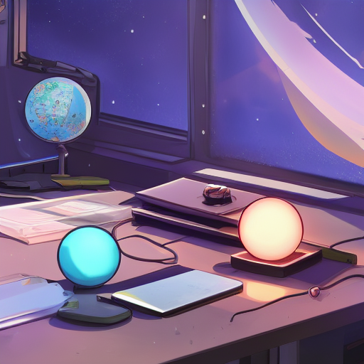

Aviso de Saída Qualidade - JDK 27: G1 padrão em Ambientes Todos
Quality Outreach Heads-up - JDK 27: Default G1 in All Environments
Esta Notificação é parte da comunicação regular enviada para os projetos envolvidos; ela aborda a G1 se tornando o coletor de garbage default em todas as ambientes.
Fonte: Inside Java
O GC padrão continua sendo aquela boa escolha que se encaixa na maioria dos casos. Serve no seu ? Simples, mude e faça um teste de performance. Dependendo do seu caso o uso do GC é indiferente.
A atualização do JDK 27 com o GC de primeira geração (G1) como padrão em todos os ambientes é um avanço significativo para Java. Os desenvolvedores podem agora se concentrar mais na otimização da aplicação sem preocupações adicionais sobre configuração de gerenciadores de memória. No entanto, será importante monitorar os impactos nos benchmarks existentes, pois G1 pode ter comportamentos diferentes comparado ao GC generico (G1).
Estou impressionado com a decisão de tornar o Garbage Collector G1 como padrão em todas as ambientes, vou ter que reavaliar minhas estratégias de otimização para Java. A implementação de um GC mais eficiente pode afetar significativamente o desempenho dos aplicativos. Espero que essa mudança trouxe soluções para os problemas de memória que muitos desenvolvedores enfrentam.